This is our first linear elasticity example problem. We discuss the non-dimensionalisation of the governing equations and their implementation in oomph-lib, and then demonstrate the solution of a 2D problem: the deformation of an elastic strip by a periodic traction.
The governing equations
The figure below shows a sketch of a general elasticity problem. A linearly elastic solid body occupies the domain  and is loaded by a body force 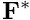 and by a surface traction 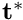 which is applied along part of its boundary, 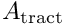. The displacement is prescribed along the remainder of the boundary,
and is loaded by a body force 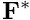 and by a surface traction 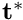 which is applied along part of its boundary, 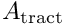. The displacement is prescribed along the remainder of the boundary,  , where 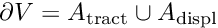.
, where 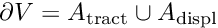.

We adopt an Eulerian approach and describe the deformation in terms of the displacement field 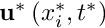 where 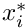 and  are the spatial coordinates and time, respectively. Throughout this document we will use index notation and the summation convention, and use asterisks to distinguish dimensional quantities from their non-dimensional counterparts.
are the spatial coordinates and time, respectively. Throughout this document we will use index notation and the summation convention, and use asterisks to distinguish dimensional quantities from their non-dimensional counterparts.
Denoting the density of the body by  , the deformation is governed by the Cauchy equations,
, the deformation is governed by the Cauchy equations,
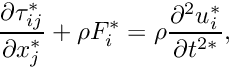
where  is the Cauchy stress tensor which, for a linearly elastic solid, is given by
is the Cauchy stress tensor which, for a linearly elastic solid, is given by
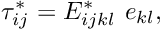
where 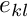 is the strain tensor,
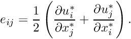
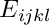 is the 4th order elasticity tensor, which for a homogeneous and isotropic solid is
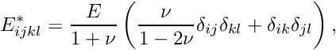
where  is Young's modulus,
is Young's modulus,  is the Poisson ratio and
is the Poisson ratio and  is the Kronecker delta. Thus the Cauchy stress is given in terms of the displacement derivatives by
is the Kronecker delta. Thus the Cauchy stress is given in terms of the displacement derivatives by
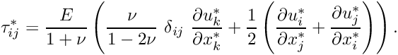
We non-dimensionalise the equations, using a problem specific reference length,  , and a timescale
, and a timescale  , and use Young's modulus to non-dimensionalise the body force and the stress,
, and use Young's modulus to non-dimensionalise the body force and the stress,
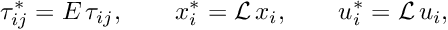
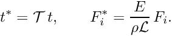
The non-dimensional form of the Cauchy equations is then given by
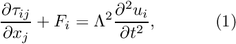
where
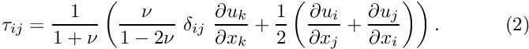
The parameter
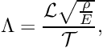
is the ratio of the elastic body's intrinsic timescale,  , to the problem-specific timescale, , that we used to non-dimensionalise time.
, to the problem-specific timescale, , that we used to non-dimensionalise time.
The displacement constraints provide a Dirichlet condition for the displacements,
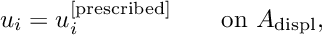
while the traction boundary conditions require that
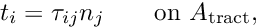
where the  are the components of the outer unit normal to the boundary.
are the components of the outer unit normal to the boundary.
In this tutorial we only consider steady problems for which the equations reduce to
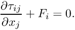
Implementation
The elements
Within oomph-lib, the non-dimensional version of the DIM-dimensional Cauchy equations (1) with the constitutive equations (2) are implemented in the LinearElasticityEquations<DIM> equations class. Following our usual approach, discussed in the (Not-So-)Quick Guide, this equation class is then combined with a geometric finite element to form a fully-functional finite element. For instance, the combination of the LinearElasticityEquations<2> class with the geometric finite element QElement<2,3> yields a nine-node quadrilateral linear elasticity element. As usual, the mapping between local and global (Eulerian) coordinates within an element is given by,
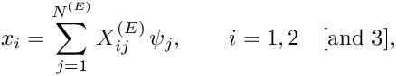
where 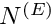 is the number of nodes in the element, 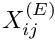 is the  -th global (Eulerian) coordinate of the
-th global (Eulerian) coordinate of the  -th
-th Node in the element, and the  are the element's shape functions, defined in the geometric finite element.
are the element's shape functions, defined in the geometric finite element.
The cartesian displacement components 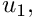 
[and 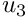] are stored as nodal values, and the shape functions are used to interpolate the displacements as
where  is the -th displacement component at the -th
is the -th displacement component at the -th Node in the element. Nodal values of the displacement components are accessible via the access function
which returns the -th displacement component stored at the element's -th Node.
The example problem
To illustrate the solution of the steady equations of linear elasticity, we consider the 2D problem shown in the sketch below.

Infinitely long strip loaded by a periodic traction. 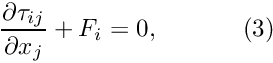 in the domain 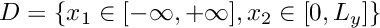, subject to the Dirichlet boundary conditions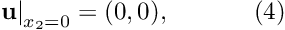 on the bottom boundary, the Neumann (traction) boundary conditions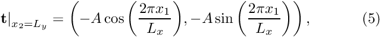 on the top boundary, and symmetry conditions at and 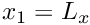, and 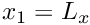,
|
![\[ \left. {\bf u}\right|_{x_1=0} = \left.{\bf u}\right|_{x_1=L_x}. \]](form_50.png)
We note that for 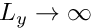 the problem converges to the analytical solution.
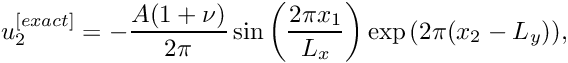
Results
The figure below shows a vector plot of the displacement field near the upper domain boundary for 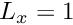 and 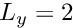.
Note that we only discretised the infinite strip over one period of the applied, spatially-periodic surface traction, and imposed symmetry conditions on the left and right mesh boundaries.
The plot shows that the displacements decay rapidly with distance from the loaded surface – as suggested by the analytical solution for the infinite depth case. This suggests that the computation could greatly benefit from the use of spatial adaptivity. This is indeed the case and is explored in another tutorial.
Global parameters and functions
As usual, we define all non-dimensional parameters in a namespace.
The driver code
We start by setting the number of elements in each of the two coordinate directions before creating a DocInfo object to store the output directory.
We build the problem using two-dimensional QLinearElasticityElements, solve using the Problem::newton_solve() function, and document the results.
The problem class
The Problem class is very simple. As in other problems with Neumann boundary conditions, we provide separate meshes for the "bulk" elements and the face elements that apply the traction boundary conditions. The latter are attached to the relevant faces of the bulk elements by the function assign_traction_elements().
The problem constructor
Since this is a steady problem, the constructor is quite simple. We begin by building the meshes and pin the displacements on the appropriate boundaries. We then assign the boundary values for the displacements along the bottom boundary. We either set the displacements to zero or assign their values from the exact solution for the infinite depth case.
Next we pass a pointer to the elasticity tensor (stored in Global_Physical_Variables::E) to all elements.
We loop over the traction elements and specify the applied traction.
The two submeshes are now added to the problem and a global mesh is constructed before the equation numbering scheme is set up, using the function assign_eqn_numbers().
The traction elements
In anticipation of the extension of this code to its adaptive counterpart, we create the face elements that apply the traction to the upper boundary in a separate function.
Post-processing
As expected, this member function documents the computed solution.
Comments and Exercises
Comments
As discussed in the introduction, the non-dimensional version of the steady Cauchy equations only contains a single non-dimensional parameter, the Poisson ratio which is passed to the constructor of the IsotropicElasticityTensor. If you inspect the relevant source code src/linear_elasticity/elasticity_tensor.h you will find that this constructor has a second argument which defaults to one. This argument plays the role of Young's modulus and is best interpreted as the ratio of the material's actual Young's modulus to the (nominal) Young's modulus used in the non-dimensionalisation of the equations. The ability to provide this ratio is important if different regions of the body contain materials with different material properties.
Exercises
- Fix the size of the domain and set the displacements along the bottom boundary to the exact solution for the infinite depth case, i.e. 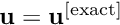, using the
Global_Parameters::Finiteflag. Then investigate how the solution converges to the exact solution for increasing numbers of elements. - Try varying the depth of the domain by changing
Global_Parameters::Lywhile maintaining a constant spatial resolution (i.e. increasing the number of elements – this is already done in the driver code where we computenyin terms ofGlobal_Parameters::Ly) and compare how the solution converges to the exact solution of the infinite depth case.
Source files for this tutorial
- The source files for this tutorial are located in the directory:
demo_drivers/linear_elasticity/periodic_load/ - The driver code is:
demo_drivers/linear_elasticity/periodic_load/periodic_load.cc
PDF file
A pdf version of this document is available.